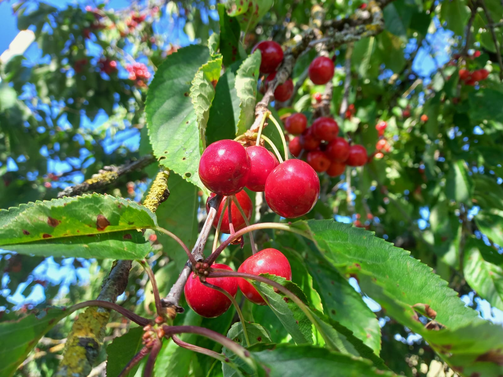
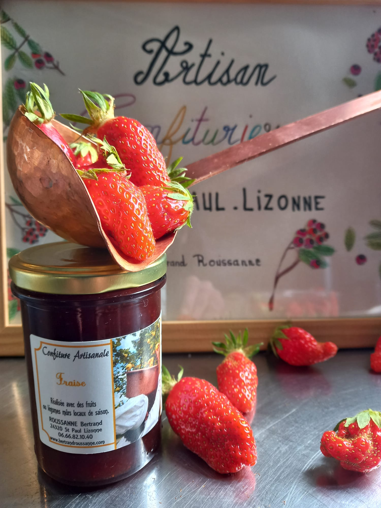
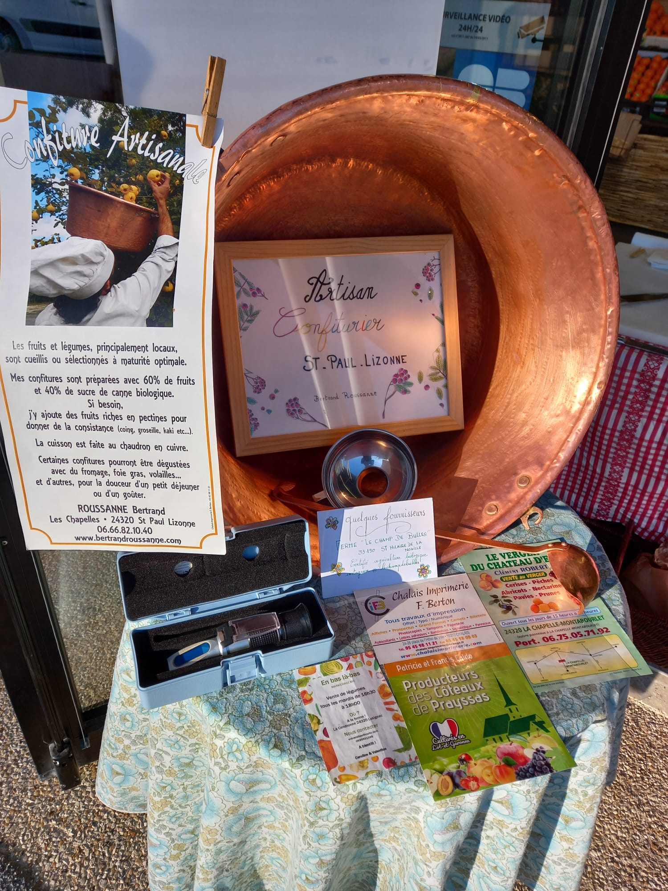

Confitures artisanales
Qu’ils soient glanés ou même sauvages,ils finissent par mijoter lentement dans notre chaudron de cuivre, nos confitures artisanales retrouvent le goût vrai des saisons et la patience des bons gestes.
La genèse
Avant tout amoureux de la cuisine française, diplômé d'un CAP cuisinier en 1998, la vie m'a éloigné un temps de mes racines. En retournant à ma campagne natale des années plus tard, ce sont les confitures de mon enfance qui m'ont rappelé à moi — ce goût vrai, introuvable dans le commerce. Alors j'ai décidé de le recréer, et de le partager.
CAP Cuisinier · 1998
Notre savoir-faire
Saveurs de saison, cueillies et transformées avec soin



Notre engagement
La tradition au service du goût
Chaque préparation est réalisée à la main dans notre chaudron de cuivre hérité, garant d'une cuisson douce et d'arômes préservés.
Nous sélectionnons uniquement des fruits mûrs à point, cultivés localement, pour capturer l'intensité de chaque saison dans le bocal.
Nous utilisons un sucre de canne biologique ce qui donne un goût vraiment différent et sans perte de qualité du fruit au cours de la cuisson.